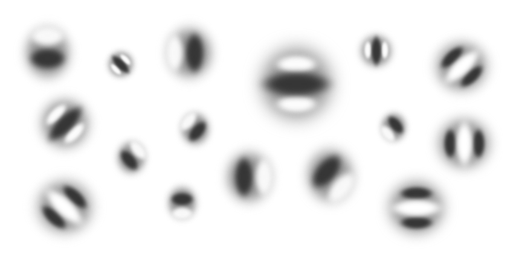
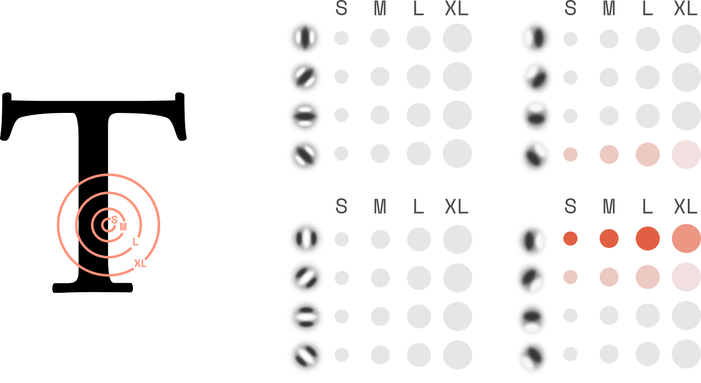
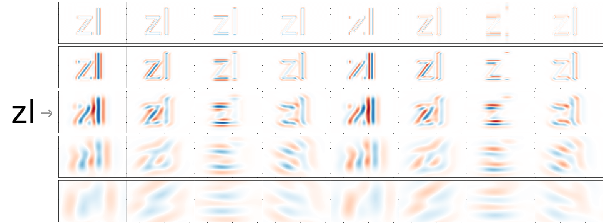
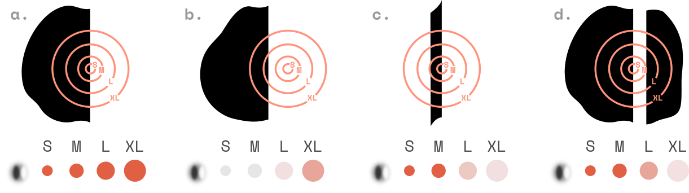
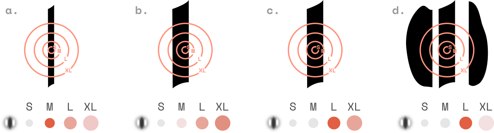
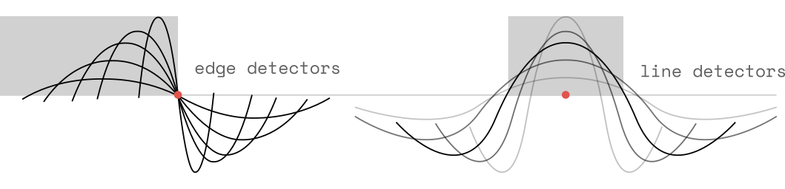
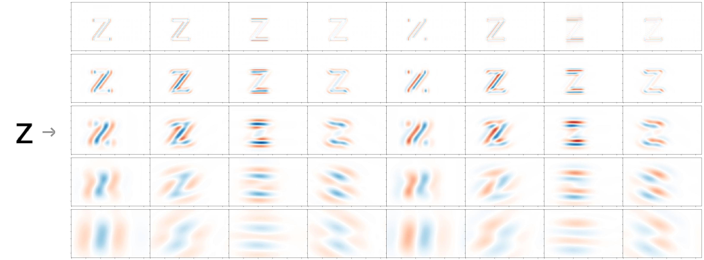
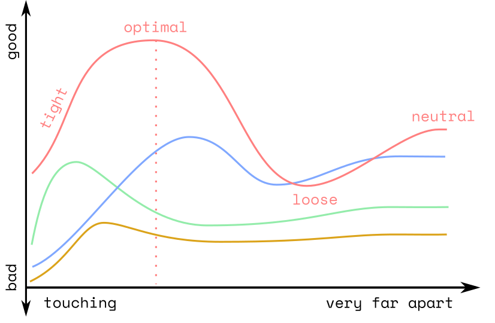

YinYangFit ☯
A letterfitting model inspired by biology
Overview
There are three parts to this project:
- An explanation of the model, updated regularly as I refine it. (You’re reading this at the moment.)
- A Jupyter notebook hosted on Google Colab, which I use to experiment with different variations on the model. I will make the notebook public soon. Note that I’m using it as a live-coding environment, so don’t expect clean code.
- A letterfitting tool designed for end users. This will probably take the form of a Python script, perhaps with a simple browser interface, which takes in any font file and adds spacing and kerning values according to the model. This doesn’t exist yet.
Acknowledgements
A big thank-you to Google for their generous funding of this research project.
Project plan
- Early October 2019: publish basic concept
- October 2019: publish Colab notebook
- Sometime, hopefully in 2019: converge on a model that works universally
- Late 2019 / early 2020: build and publish letterfitting tool
The goal: a general model
A defensible model doesn’t just fit many different existing, well-fitted fonts; it must also agree with what we know about how reading works:
Humans can fit any of the above, so our model should be able to as well.
It must be based on a frequency-domain representation. In the first stage of our brains’ visual processing, any imagery is decomposed into local distributions of spatial frequencies, phases, and orientations. Our model must do the same. (We will briefly review the details below.)
It must be invariant to text contrast. We can read and fit black and white letters equally well, presumably using the same neural circuitry. This means that the higher-level brain regions which recognize shapes and allow us to fit them must operate solely on geometric features (shape outlines and skeletons), not on colour. Therefore, in our model, changing or even inverting the contrast of the input must not affect the output.
It must be robust to simple transformations. Within reasonable limits, we can read and fit letters even when they have been blurred, outlined, or subjected to noise. In our model, applying such simple distortions must not significantly affect the output.
It must work for any shapes. We can jumlbe aornud the ltrets in ervey wrod and still be able to read the text fine, so clearly our brains ignore the exact order of the letters and the shapes of the gaps between them. We seem to mainly read first and last letter and consonants, and see Dandurand et al. for a great statistical corpus analysis on this topic. In fact, letterfitting probably uses the same kind of neural machinery used in shifting Kanji strokes around and in knolling your stationery, so any particular features of the Latin script are likely secondary – except for its strictly horizontal orientation.
Summary
Drawing from a growing body of experimental research, I propose that the perception of letter shapes is primarily mediated by the detection of local phase relationships across spatial frequencies and orientations.
In particular, I propose that letter-pair distances affect readability in two ways:
A tight letter gap dampens the response of larger-scale V1 simple cells near the gap, resulting in a reduction in the phase congruency along the outline of both letters. This is perceived as the letters “blurring into one another”.
A wide letter gap elicits a strong, phase-congruent response from even-symmetric simple cells. The response belongs to neither of the participating letter shapes, and is therefore perceived as a salient feature in its own right, namely, a word break.
The two effects are unrelated, but both manifest as changes to the local phase congruency map when the two letters are placed next to one another at some distance. These changes combine in nonlinear ways, across scales and orientations, and are stronger for some letter pairs than for others.
At the optimal distance, the reduction in phase congruency in either letter is acceptably small when compared to the individual letters, while the letter gap is not perceived as wide enough to suggest, however subtly, a word break.
Preprocessing using a wavelet filter bank
The proposed model operates on images of letter pairs that have been convolved with a wavelet filter bank. Ideally CORF, but simple Gabor or log-Gabor patches will do just fine.
Wavelet filtering is the standard technique to simulate the output of so-called simple cells in the primary visual cortex (V1). Simple cells receive their input from the lateral geniculate nucleus (LGN), a small bump protruding from the thalamus, the switchboard at the center of the brain. The LGN takes visual information directly from the retinal ganglion cells (RGCs) in the eye, which compare and combine the input from neighbouring photoreceptors.
In the visual cortex, simple cells combine the outputs of neighbouring RGCs, effectively forming elongated receptive fields.  Receptive fields of typical simple cells in the primary visual cortex. Note the range of frequencies, orientations, and phases (0° and 180° for black and white lines, and 90° and 270° for left and right edges, respectively) These elongated receptive fields allow simple cells to activate on edges (i.e. transitions from light to dark) and on lines (i.e. light regions flanked by dark and vice versa). This is a sensible design, because the salient parts of any natural image will be made up of edges and lines. Flat areas carry little information and their colour changes with the lighting conditions, so they’re not a priority for the visual system. Not by coincidence, similar-looking patterns quickly emerge in the first-layer kernels of ConvNets when trained on natural images.
Simple cells of various sizes (i.e., spatial frequencies), orientations and phases exist throughout V1. They’re densely packed and their arrangement mirrors that of their receptive fields on the retina. At each image location, different types of simple cells are active:

One way to visualize the result of this step is to look at the activations of all simple cells of one particular frequency, orientation and phase:

Note that in this image, red and blue correspond to activations of opposite-phase simple cells, respectively (e.g. red corresponds to white-to-black transitions, and blue corresponds to black-to-white transitions).
Phase congruency and feature localization
What’s a good indicator for the presence of an edge? An activated edge-detecting simple cell, of course! But we can do better. The best indicator for the presence of an edge is a consensus among many edge-detecting cells of different frequencies:

Directly on edge, all detectors respond strongly (a). But even as we move away from the edge, the larger edge detectors (i.e. low spatial frequencies) will still get a bit of activation (b). Generally, we cannot be sure that we’re dead on unless the small detectors (i.e. high spatial frequencies) agree.
On the other hand, there are locations where only the small edge detectors are active, and the large ones barely register (c). This happens right on the edges of thin features, e.g. serifs.
The idea that agreement between equal-phase, different-scale detectors is the a great way to detect local features is called phase congruency. It’s been around since at least the 1980s, The earliest paper discussing related concepts I was able to find dates from 1986. and has made a bit of a comeback in recent years as neuroscientists have come to realize that phase information is actually quite important.
With line detectors, it’s less clear cut:

Unlike edge detectors, line detectors will never be fully congruent in their responses. This is because lines detectors need to align with two edges, not just one, to maximally activate. When detectors are smaller than the line is wide, they register nothing; when they are much larger, they respond only weakly. Still, greatest line phase congruency is along the center of lines, allowing us to detect stems, counters, and inter-letter gaps.

It’s primarily the local measures of phase congruency that allow us to precisely determine the location of edges and lines in an image. In the context of letter perception, this means that the stems and the outlines are the most salient information.
Dynamics of simple cells and beyond
The signals about edges and lines detected by V1 simple cells are combined by so-called complex cells and then passed on to higher-level brain areas such as V2 and V4, where more complex geometric features such as junctions and curves are detected, before those are further combined and finally recognized as letters.
Before any of that happens, however, the simple cells interact among themselves, suppressing or amplifying their neighbours in particular ways. This introduces complicated temporal dynamics that we couldn’t reasonably model here, even if the precise inter-neural wiring were known. However, it’s helpful to understand some of these interactions, so that we might be able to approximate some of them when necessary.
The most common interaction is lateral inhibition, in which neurons are inhibited by strongly activated neighbours. Because neurons respond nonlinearly to their input, this mechanic allows strongly activated cells to silence their more weakly activated neighbours, sharpening the peaks and flattening the valleys in the output.
In the standard computational model for this behaviour, divisive normalization, each cell’s activation is simply divided by a weighted sum of its neighbour’s activations. Tadamasa Sawada and Alex Petrov have collected everything there is to know about divisive normalization parameters.
Note that phase congruency computations could plausibly be implemented in a very similar fashion to divisive normalization as well It’s important to be careful here; the correspondence between positive responses from opposite-phase physical neurons and negative-value Fourier transform outputs can cause confusion, especially when implementing nonlinearities.: first, equal-phase activations are summed across frequencies to form phase totals; each phase total is then divided by some constant, plus a weighted sum of all phase totals.
Simple cells in particular appear to implement an additional behaviour. Neighbouring cells with aligned receptive fields mutually amplify their activations, whereas cells with orthogonal or flanking orientations suppress each other. The dynamics of this setup allows entire contours to pop out, even when there are holes in it. Zhaoping Li built a cool model of this all the way back in 1998 and her paper is one of my favourites in the field.
Phase congruency and letter recognition
Let’s return to the basic wavelet decomposition of our letter pair zl:
Now, let’s take a look at what the simple cell activations would look like without the second letter, l:

Look closely, particularly at the coarser-scale frequency bands. Evidently, the second letter disturbed the first letter’s activations.
To be clear, the decomposition of the pair is simply the sum of each individual letter’s decomposition. But because the addition takes place in complex frequency space, it results in phase shifts between edge and line activations, which in turn dampen or amplify the local measures of phase congruency.
Here is the phase congruency map of the pair:
[image]
And here is the one of just the first letter:
[image]
By placing the second letter close to the first, we limit the phase congruency to the finer-scale frequencies. This makes it more difficult for human observers to precisely locate the edge. Human observers might say “the edges blur together” – of course, a true blur reduces phase congruency by eliminating high frequencies, whereas a tight letterfit reduces phase congruency by attenuating low frequencies, but either way, the human experience is one of reduced phase congruency. Zhou Wang and Eero Simoncelli have worked out the math on this phenomenon in this neat little paper.This is the first thing out model needs to penalize.
If, on the other hand, we place the second letter too far to the right, a different phenomenon occurs. Large-scale line detectors will become active in the gap. This is the other thing we must penalize: the appearance of large lines.

Any large lines that are part of the participating letters will be an unchanging contribution to the total, shifting the distance-penalty curve only vertically but not sideways.
Note that we can completely eliminate any reference to what used to be dark or bright by adding up the responses of opposite-phase edge and line detectors (i.e., by taking absolutes or squares after the inverse Fourier transform). Darkness and brightness are what allow edges and lines to exist, in a delightful kind of dualistic monism ☯ in reverse, but they’re not in and of themselves relevant to the fit.
Questions
How is phase congruency implemented? In the standard literature, phase congruency is defined as the local ratio between the magnitude of the sum of the complex wavelet coefficients, and the sum of the magnitudes. This is very practical because it’s a dimensionless quantity, but connections in V1 allow for different normalization weights for many different congruency-encoding neurons, each of which would correspond to some peak scale and orientation. How many coefficients are needed? What’s the best place for nonlinearities?
Where does this model fail? We are ignoring all feedback from higher-level brain regions (which is known to exist, and to have an impact on early perception) and highly dynamic behaviours such as contour integration. What kinds of failure modes do those approximations lead to?